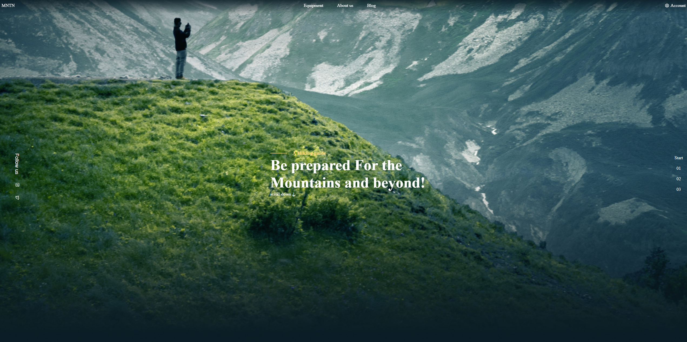
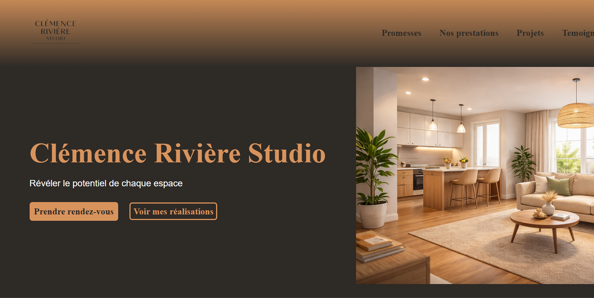
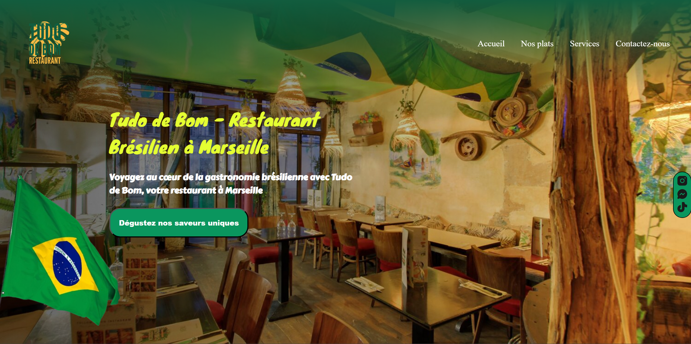
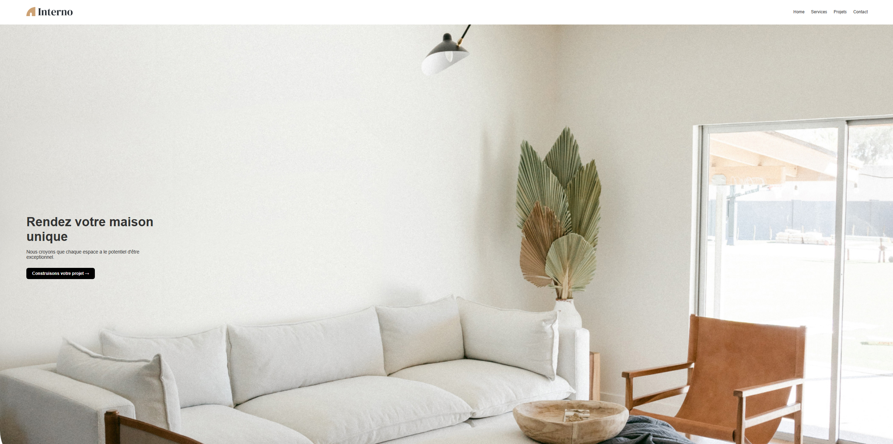
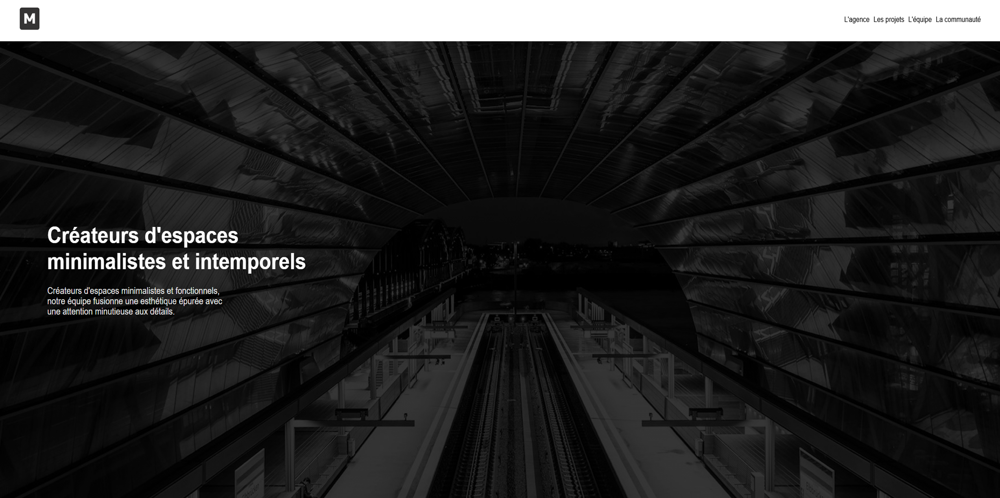
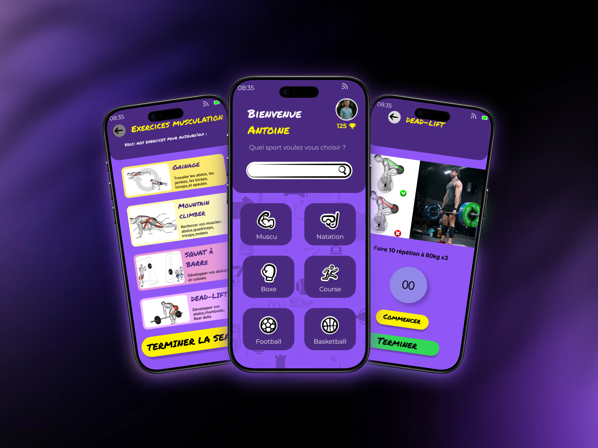
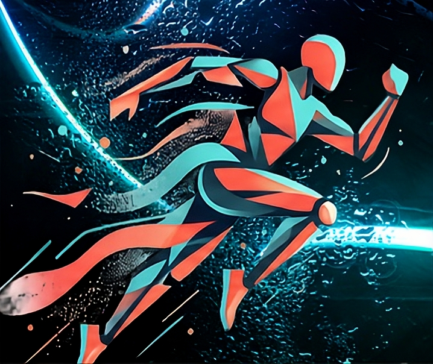
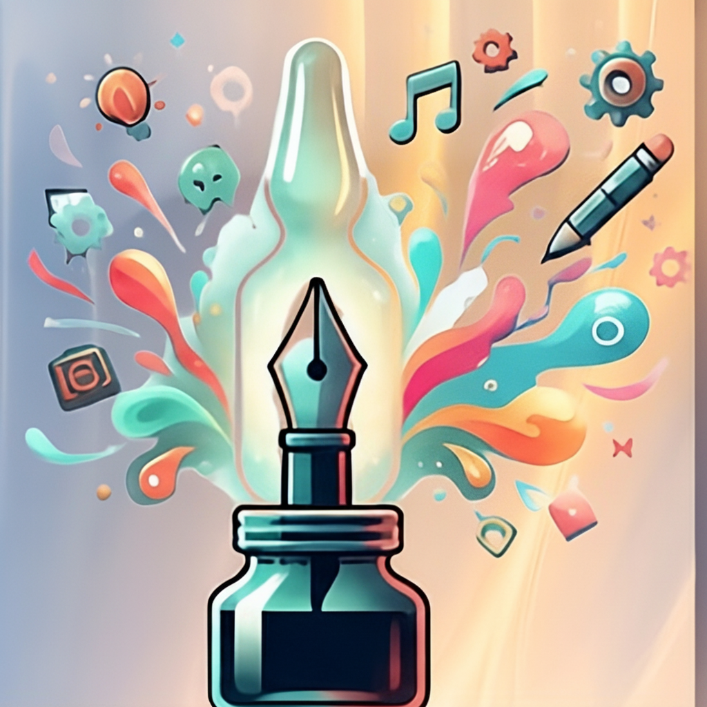
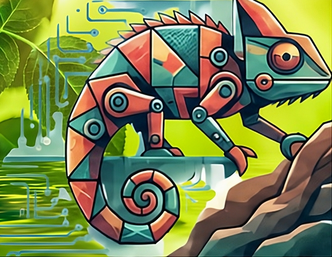

MNTN

Un site créé pour une expérience de randonnée en montagne, avec une interface inspirée du plein air et une expérience proche d'une boutique en ligne pour découvrir et choisir différents équipements.
À la recherche d'une alternance
Bonjour ! Moi c'est
Développeur web </>
Je transforme mes projets de formation en expériences web soignées. Voici ce que j'ai construit, et qui je suis derrière le code.
Mon socle
A selection of full-stack applications and digital experiences built with modern technologies.

Un site créé pour une expérience de randonnée en montagne, avec une interface inspirée du plein air et une expérience proche d'une boutique en ligne pour découvrir et choisir différents équipements.

Un site vitrine réalisé pour une décoratrice d'intérieur afin de présenter son univers, ses réalisations et son savoir-faire à travers une interface élégante et chaleureuse.

Un site réalisé pour un restaurant brésilien mettant à l'honneur les plats traditionnels et la culture brésilienne, avec une présentation du restaurant et de ses événements culturels.

Un site créé pour un architecte afin de présenter ses projets, ses propositions de plans de construction et son travail architectural à travers une interface moderne et professionnelle.

Un site dédié au design et à l'aménagement dans le secteur du bâtiment, conçu pour mettre en avant les projets, les idées et l'approche créative autour de l'architecture et du design.

Une application sportive conçue pour Antoine afin de l'accompagner dans sa pratique sportive avec des séances adaptées à ses objectifs, ainsi que des défis quotidiens sous forme de jeu pour rendre son entraînement plus motivant.

.png)


Mental d'acier, discipline quotidienne et dépassement de soi.
Intérêt profond pour la langue et l'histoire.
Esthétique visuelle et culture.
Bivouacs, adaptabilité en milieu hostile et gestion du stress.
De mes débuts jusqu'à aujourd'hui